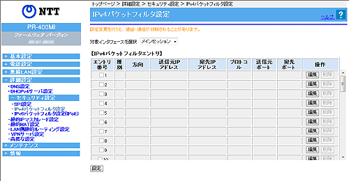
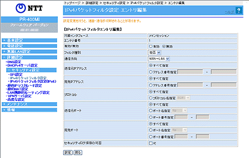

| 詳細設定−セキュリティ設定−IPv4パケットフィルタ設定 |
パケットフィルタにより、本商品を通過するパケットを制限することができます。
IPアドレス、プロトコル、ポート番号などの条件により、中継するIPv4パケットを通過あるいは廃棄するように指定することができます。
条件を適切に設定することで、特定のサービスやホスト間の通信を禁止するための簡易ファイアウォールを構築することができます。
複数の条件を設定した場合、優先順位の高いものから順に解釈され、判定が行われます。
「拒否」の条件に合致したパケットは廃棄され、「通過」の条件に合致したパケットのみが通過を許可されます。 |
| |
| ※「Web設定」画面に表示されているボタンについての説明は こちら |
|  |
|
|
| 対象インタフェースを選択 |
| |
パケットフィルタ設定をするインタフェースを選択します。
「メインセッション」、「セッション2〜5」、「全て」から選択します。
なお、個別のセッションの設定が「全て」のセッションに対するエントリに優先して適用されます。 |
|
|
| ［IPv4パケットフィルタエントリ］ |
| |
| ＜［IPv4パケットフィルタエントリ］で使用するものを適用にする場合＞ |
|
- 使用する［エントリ番号］のチェックボックスをチェックする
- ［設定］をクリックする
|
|
| ＜［IPv4パケットフィルタエントリ］で使用しないものを未適用にする場合＞ |
|
- 使用しない［エントリ番号］のチェックボックスのチェックを外す
- ［設定］をクリックする
|
|
|
| ＜［IPv4パケットフィルタエントリ］を編集する場合＞ |
|
編集したいエントリの行末にある［編集］をクリックする
「エントリ編集」の画面が表示されます。
編集後、［設定］をクリックする |
|
| |
| ＜［IPv4パケットフィルタエントリ］を削除する場合＞ |
|
削除したいエントリの行末にある［削除］をクリックする |
|
|
|
|  |
|
| 有効/無効 |
| |
エントリの有効/無効を選択します。 |
| |
| フィルタ種別 |
| |
フィルタリング条件に適合したパケットの取り扱いを選択します。
「通過」が指定された場合は、IPパケットは中継されます。
一方、「拒否」が指定された場合は、パケットは中継されることなく、廃棄されます。 |
| |
| 通信方向 |
| |
処理したいパケットの方向を選択します。 |
| |
| 送信元IPアドレス |
| |
フィルタするパケットの送信元IPアドレスの範囲を入力します。
なお、すべての送信元IPアドレスをフィルタリング対象にする場合は、「すべて指定」を選択します。 |
| |
| 宛先IPアドレス |
| |
フィルタするパケットの送信先IPアドレスの範囲を入力します。
なお、すべての宛先IPアドレスをフィルタリング対象にする場合は、「すべて指定」を選択します。 |
| |
| プロトコル |
| |
フィルタするパケットのプロトコル番号を入力します。
全プロトコルを対象とする場合は、「すべて指定」を選択します。
予約済みの名前としては、「TCP」「UDP」「ICMP」が用意されています。 |
| |
| 送信元ポート |
| 宛先ポート |
| |
フィルタするパケットの送信元ポート番号および宛先ポート番号を1〜65535の数値で入力します。
全ポート番号を対象とする場合は、「すべて指定」を選択ます。
予約済みの名前としては、「ftp」「ftpdata」「telnet」「smtp」「domain」「www」「pop3」「sunrpc」「nntp」「ntp」「login」「route」「pptp」が用意されています。
ポート番号を範囲指定する場合は、最小値と最大値を「-」（半角ハイフン）でつないで入力します。 |
| |
＜お知らせ＞
- 次のポート番号は名称で入力することができます。
ただし、名称で入力した場合は範囲指定することができません。
| 20 :ftpdata |
21 :ftp |
23 :telnet |
25 :smtp |
| 53 :domain |
80 :www |
110 :pop3 |
111 :sunrpc |
| 119 :nntp |
123 :ntp |
513 :login |
520 :route |
| 1723 :pptp |
|
|
|
|
| |
|
| |
なお、プロトコルとポート番号の設定の組み合わせによるフィルタリング対象は以下のとおりです。
| プロトコル |
ポート番号 |
フィルタリング対象 |
| TCP/UDP |
「すべて指定」 |
指定プロトコルの全てのポート番号のパケット |
| TCP/UDP |
「すべて指定」以外 |
指定プロトコルの指定ポート番号のパケット |
| TCP/UDP以外 |
（設定を無視） |
指定プロトコルのパケット |
| 「すべて指定」 |
（設定を無視） |
全てのプロトコルのパケット |
|
| |
|
| セキュリティログ保存の可否 |
| |
セキュリティログを保存するか否かを選択します。
可をチェックすると、セキュリティログが保存されます。 |
|
|
| ↑ページのトップへ |